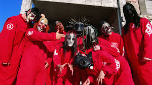
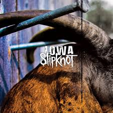
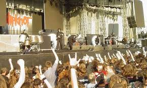

Slipknot es una banda de metal formada en 1995 en Des Moines, Iowa. Son conocidos por su estilo agresivo, su imagen enmascarada y su poderosa presencia en el escenario. Han sido una de las bandas más influyentes del metal moderno.
La formación original incluía a Shawn Crahan (Clown), Joey Jordison, Paul Gray, Anders Colsefni y otros. Con el tiempo, la banda evolucionó y logró consolidar su alineación con Corey Taylor como vocalista principal.
En 1999, Slipknot lanzó su álbum homónimo "Slipknot", el cual marcó un antes y un después en el metal. Canciones como "Wait and Bleed" y "Spit It Out" los catapultaron a la fama con su sonido extremo y caótico.
Con álbumes como "Iowa" (2001) y "Vol. 3: (The Subliminal Verses)" (2004), Slipknot se estableció como una de las bandas más importantes del metal. Su sonido evolucionó, pero sin perder la brutalidad que los caracterizaba.
En 2010, la banda sufrió una gran pérdida con la muerte de Paul Gray, su bajista y miembro fundador. Luego, en 2013, Joey Jordison, uno de los bateristas más icónicos del metal, dejó la banda. A pesar de estos golpes, Slipknot continuó con nuevos integrantes y evolucionando su sonido.
Slipknot ha dejado una marca imborrable en la música, inspirando a nuevas generaciones y manteniéndose como un referente del metal extremo. Sus conciertos siguen siendo de los más intensos y agresivos de la escena del metal.
